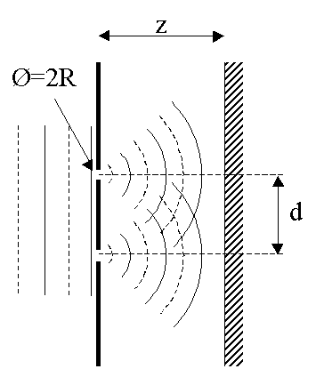
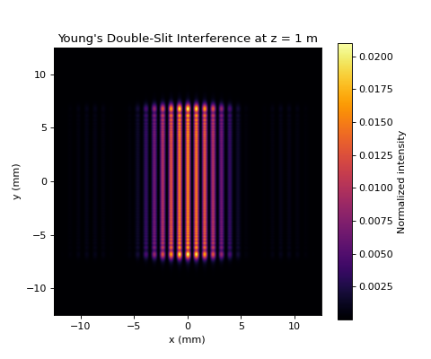
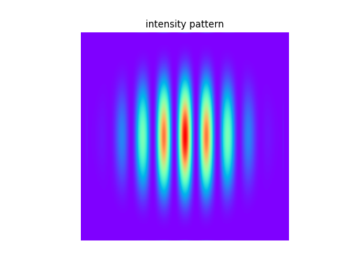

7.1.1. Young’s Experiment

Young’s double–slit experiment is one of the most iconic demonstrations of the wave nature of light. When a coherent beam illuminates two narrow, closely spaced slits, the diffracted wavefronts emerging from the slits interfere and produce a characteristic fringe pattern on a distant screen. The bright and dark fringes arise from constructive and destructive interference of the two coherent fields.
This example shows how to simulate Young’s experiment using LightPipes. It demonstrates how diffraction from each slit combines to form the interference pattern observed on the screen.
7.1.1.1. What this example illustrates
Creation of a uniform plane wave.
Definition of two rectangular slits with finite width and height.
Coherent addition of the two slit fields using \(\mathrm{BeamMix}\).
Fresnel propagation to the observation screen.
Formation of interference fringes modulated by the single–slit diffraction envelope.
7.1.1.2. Physical background
Each slit acts as a secondary source of a diffracted wavefront. At any point on the screen, the total field is the coherent sum of the contributions from both slits. The relative phase between these contributions determines whether the resulting intensity is bright (constructive interference) or dark (destructive interference).
The approximate fringe spacing is given by:
where \(\lambda\) is the wavelength, \(z\) the propagation distance, and \(d\) the center–to–center separation between the slits. Increasing the slit separation produces more closely spaced fringes, while increasing the propagation distance enlarges the pattern.
7.1.1.3. Code example
1import numpy as np
2from LightPipes import *
3import matplotlib.pyplot as plt
4
5# Parameters
6wavelength = 633 * nm
7size = 25 * mm
8N = 500
9z = 1.0 * m
10
11# Slit parameters
12slit_width = 0.10 * mm
13slit_height = 15 * mm
14slit_distance = 0.8 * mm # center-to-center separation
15
16# Begin with a plane wave
17F = Begin(size, wavelength, N)
18
19# Two rectangular slits (offset in y-direction)
20F1 = RectAperture(F, slit_width, slit_height, 0, +slit_distance/2)
21F2 = RectAperture(F, slit_width, slit_height, 0, -slit_distance/2)
22
23# Coherent addition of the two slit fields
24F = BeamMix(F1, F2)
25
26# Fresnel propagation to the screen
27F = Fresnel(F, z)
28
29# Intensity at the screen
30I = Intensity(0, F)
31
32# Coordinates for plotting
33x = np.linspace(-size/2, size/2, N) / mm
34
35plt.figure(figsize=(6, 5))
36plt.imshow(I, extent=[x[0], x[-1], x[0], x[-1]], cmap='inferno')
37plt.xlabel('x (mm)')
38plt.ylabel('y (mm)')
39plt.title("Young's Double-Slit Interference at z = 1 m")
40plt.colorbar(label='Normalized intensity')
41plt.show()
7.1.1.4. Expected result
The intensity distribution on the screen shows:
A series of bright and dark vertical fringes due to interference between the two coherent slit fields.
A slowly varying envelope caused by single–slit diffraction.
Fringe spacing that increases with propagation distance and decreases with slit separation.
At shorter propagation distances, the pattern exhibits a mixture of diffraction and interference. At larger distances, the classical double–slit interference fringes become more clearly defined.
(Source code, png, hires.png, pdf)
{kind=link}
{kind=link}

7.1.1.5. Two holes in stead of two slits
The following python script simulates the interference from two small holes:
from LightPipes import *
import matplotlib.pyplot as plt
"""
Young's experiment.
Two holes with radii, R, separated by, d, in a screen are illuminated by a plane wave. The interference pattern
at a distance, z, behind the screen is calculated.
"""
wavelength=5*um
size=20.0*mm
N=500
z=50*cm
R=0.3*mm
d=1.2*mm
F=Begin(size,wavelength,N)
F1=CircAperture(R/2.0,-d/2.0, 0, F)
F2=CircAperture(R/2.0, d/2.0, 0, F)
F=BeamMix(F1,F2)
F=Fresnel(z,F)
I=Intensity(2,F)
s1 = r'LightPipes for Python ' + LPversion + '\n'
s2 = r'Young.py'+ '\n\n'\
f'size = {size/mm:4.2f} mm' + '\n'\
f'$\\lambda$ = {wavelength/um:4.2f} $\\mu$m' + '\n'\
f'N = {N:d}' + '\n'\
f'd = {d/mm:4.2f} mm distance between the holes' + '\n'\
f'R = {R/mm:4.2f} mm radius of the holes' + '\n'\
f'z = {z/mm:4.2f} mm distance to screen' + '\n'\
r'${\copyright}$ Fred van Goor, June 2020'
fig=plt.figure(figsize=(9,9));
ax1 = fig.add_subplot(211);ax1.axis('off')
ax2 = fig.add_subplot(212);ax2.axis('off')
ax1.imshow(I,cmap='rainbow');ax1.set_title('intensity pattern')
ax2.text(0.0,1.0,s1,fontsize=12, fontweight='bold')
ax2.text(0.0,0.5,s2)
plt.show()
Result:
(Source code, png, hires.png, pdf)
{kind=link}
{kind=link}
